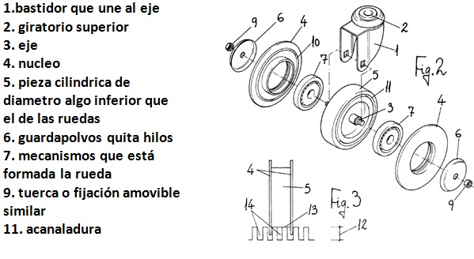

Testear
Llegados a este punto es donde podemos dejar fluir toda la creatividad del grupo. Es muy importante no dar soluciones o ideas a nuestro reto hasta que no llega este momento, en el que ya tenemos perfectamente definido el punto de vista del usuario.


BOSQUEJO
Aqui mostramos un bosquejo con algunas especificaciones de las ruedas de rcarritos de supermercado.
INVOLUCRADOS EN EL DESARROLLO DE LA PROPUESTA
1.bastidor que une al eje:
Permitira mantener sujeto el dispositivo de frenado al carrito de compras, brindando asi mas seguridad.
2.giratorio superior
Permitira que el carritos pueda reallizar sus funciones con total normalidad brindandole al cliente mas comodiad al momento de realizar compras.
3.eje
El eje basicamente mantiene unida la rueda del sistema de freno con el bastidor.
4.nucleo
Protege al eje de posibles golpes y mantiene firme la rueda.
5. pieza cilindrica de diametro algo inferior que el de las ruedas
Es la rueda la cual se encuntra hecho de un material sintetico y siendo asi suave ante posibles grietas o superficies malas por las que es carrtio tenga que pasar.
6. guardapolvos quita hilos
Mantine la posicion de la pieza cilindrica para que asi la tuerca de fijacion pueda cumplir su funcion sin dañar otros componentes al momento de asegurar.
7. mecanismos que está formada la rueda
Permitira que el carritos pueda reallizar sus funciones con total normalidad brindandole al cliente mas comodiad al momento de realizar compras.
9. tuerca o fijación amovible similar
Mantiene fija el guardapolvos evitando asi que se desprenda o se deslice.
11. acanaladura
Una superficie que que se encuentra cubierta por la pieza cilíndrica y a la vez mantiene estable esta, evitando que la pieza cilíndrica se deforme.
Esquema Funcional
Aqui demostraremos el esquema funcional y las reacciones del usuario frente a nuestro producto de estas obtendremos opinicnes y criticas construcctivas que ayuden a la mejora de nuestro producto final.